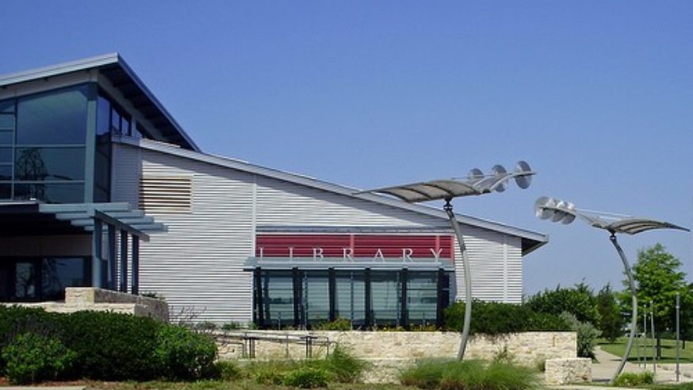

One of the core values of being an Aggie is selfless service. Helping others and building a community is a very rewarding experience. I often help at mosques when I am needed. Whenever some of my peers or underclassmen need help, I do my best to help them. I always try to be kind and compassionate. I will continue to give back to my community and will continue to strive to improve the world. Below are the two places where I have done community service.
I have done community service at the Dallas Public Library – Timberglen Branch from August 2017 to November 2017. I volunteered there as a Technology assistant and did a lot of different stuff, wherever I was needed. I stocked shelves with books, I retrieved requested books, I helped patrons use the computers, I helped update the library website, etc. Working there was a very good experience, as I got to see a lot of happy faces!
I also volunteered as a Site Supervisor for Little Texans Academy during the 2018 Summer Kids Grab on the Go program. Since some kids rely on school lunches for their meals, and schools are closed in summer, we provided meals to different areas during the summer. I acted as the supervisor over 5 members and kept track of the inventory. I also advertised the program. That summer we distributed meals to over 250 families. Improving the world with my own hands made me really glad. It was a very rewarding experience.